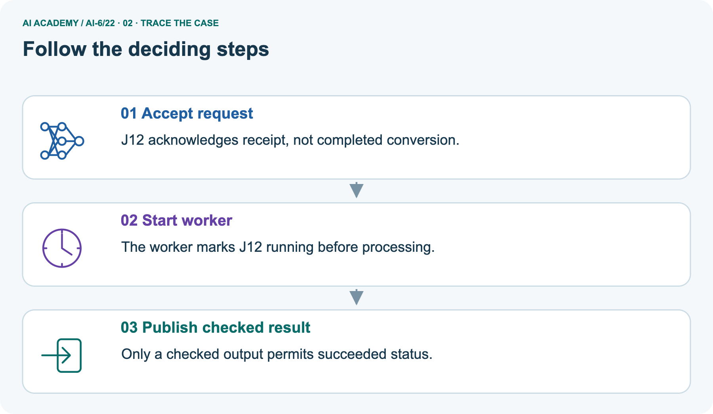
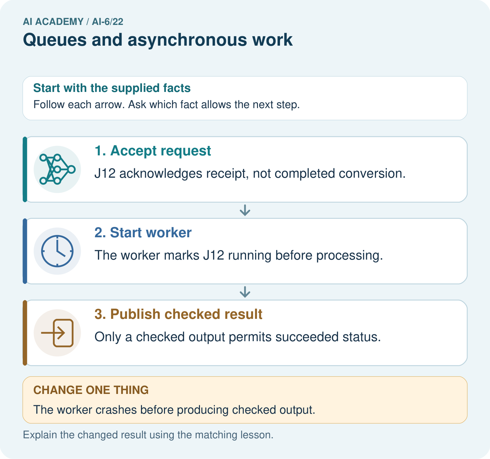
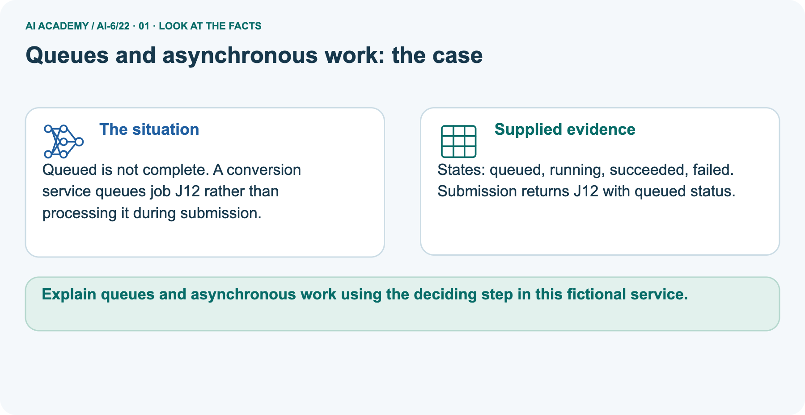
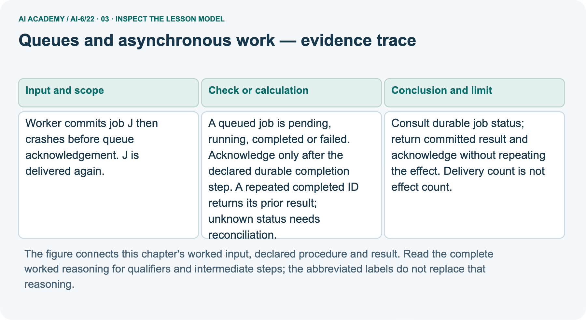
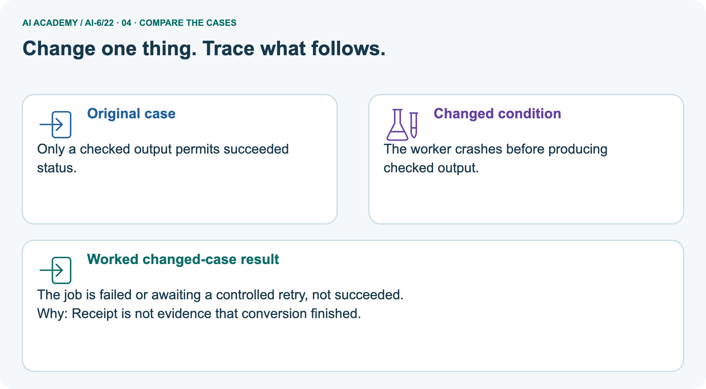
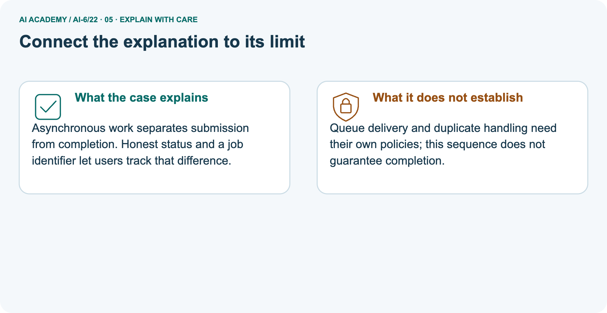
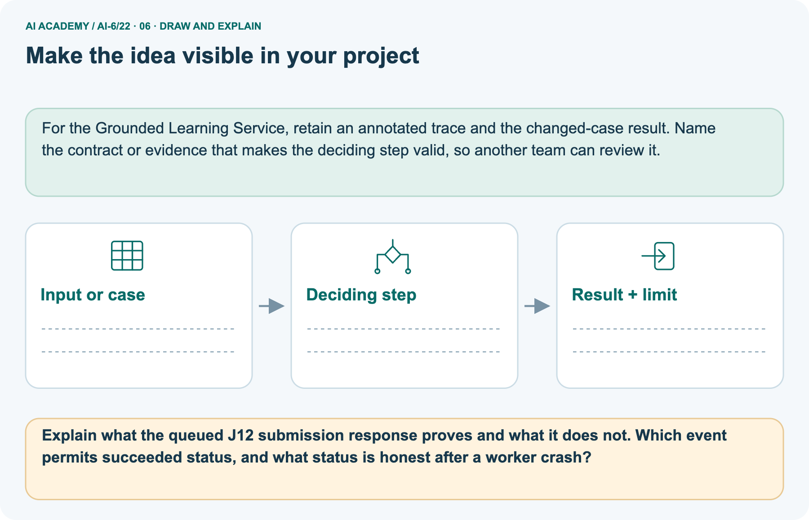

AI Academy · Level 6 · Grade 11 · Week 22 · Teacher guide
Queues and asynchronous work
Learn to understand, design, build, test and explain AI systems responsibly.
Project: Grounded Learning Service
THE CONNECTED WEEK
Ask what evidence supports this state and this effect count.
Teach preserved IDs and completion evidence with explicit durability and atomicity assumptions.
Keep one habit: Model post-commit redelivery → contrast pre-output crash → inspect missing history → assess independent state counts → record limits.
Main lesson · Section 1
Prepare the connected service investigation
Keep modelling, shared practice and independent evidence distinct.
Target and main teaching plan
Primary target: Explain the mechanism and terminology of queues and asynchronous work
| Session | Sequence and minutes | Resources |
|---|---|---|
| Session 1 · Understand · 45 min | 0–7: recall and prerequisite; 7–15: inspect the concrete case and predict; 15–30: teacher models the worked trace; 30–40: learners explain a step using the text and visual; 40–45: check the core idea. | Use Your mission, Notice the evidence, See how it works, Words that unlock the idea and Follow a worked example; record recall in the workbook. |
| Session 2 · Practise · 45 min | 0–5: retrieve the procedure; 5–15: W2 completion practice; 15–23: explain and check with a partner; 23–30: each learner answers the misconception check; 30–40: targeted reteaching or a harder variation; 40–45: prepare the investigation. | Use Find and repair a mistake, Practise together and Build your understanding; use the matching workbook W2 and Individual reasoning check. |
| Session 3 · Investigate and transfer · 45 min | 0–5: retrieve the decision rule; 5–20: investigate or trace; 20–30: start the independent case; 30–38: connect the project; 38–43: act on feedback; 43–45: plan the return check. | Use Run the investigation, Connect your project and Try a new case independently. Allow extra time for the full task set. When code is supplied, use the examples in See how it works or Follow a worked example and the browser lab in Supported practice, repair and portfolio. |
This is a starting allocation of 135 minutes, not a validated duration. Preserve all named topics. Schedule extra time for connected examples, the full investigation, independent cases and project building.
Repeated copies of a case share one recorded attempt; they are not new evidence.
Preparation and prerequisite
Lesson and workbook; paper and pencil
Calculator and optional local Python 3 for arithmetic; no live API or private data
Prepare the fresh retry separately and withhold its solution until after collection
A result depends on the inputs, procedure and conditions that produced it. Preserve data roles and distinguish observed outcomes from predictions or unmeasured conditions.
If the prior concept cannot be explained, use a short retrieval activity before this chapter.
Opening retrieval
Without opening the old lesson, explain one key idea from Caching and stale information. Give an example and a mistake that the idea helps you avoid.
Look for: Explain the mechanism and terminology of caching and stale information
Reference example, not the only acceptable wording: Teacher explanation: Caching reuses results but needs freshness and access-aware keys. A cached answer must not cross role or corpus-version boundaries.
Cache key includes query, role, corpus version and procedure version. Entry valid only while age<TTL. At exact TTL it expires. Teacher and student results never share a role-agnostic key.
Without opening the old lesson, explain one key idea from Sandboxing and resource limits. Give an example and a mistake that the idea helps you avoid.
Look for: Explain the mechanism and terminology of sandboxing and resource limits
Reference example, not the only acceptable wording: Teacher explanation: Sandboxing and quotas constrain what a process may access or consume. They reduce possible operations but do not verify every result.
The fictional job may read its fixture directory, write its output directory, use no network and run for at most 2 seconds with at most 10 queued tasks. Reject excess work before starting it.
Without opening the old lesson, explain one key idea from Timeouts retries and cancellation. Give an example and a mistake that the idea helps you avoid.
Look for: Explain the mechanism and terminology of timeouts retries and cancellation
Reference example, not the only acceptable wording: Teacher explanation: Timeouts bound waiting; retries consume a finite budget. Cancellation should stop future work while accounting for operations already committed.
Retry only declared transient failures. Use at most three attempts with waiting gaps 1 and 2 seconds; each attempt may run at most 4 seconds. Worst-case elapsed bound excluding overhead is 3*4+1+2=15 seconds.
Pictured end goal
Explain queues and asynchronous work using the deciding step in this fictional service.
Earlier wording, alternatives and picture transcripts
Teach the learning cycle
Retrieval answer guidance
Caching and stale information
Sandboxing and resource limits
Timeouts retries and cancellation
Use the three-session teaching cycle above, with extra time as needed. Queues separate acceptance from completion. Work may be redelivered, so consumers must preserve operation IDs and deduplicate committed effects. Use the supplied constructed scenarios to make the mechanism inspectable. Collect W4 before sharing solutions. Students should name intermediate evidence and limitations; classroom pacing and learning effectiveness remain unvalidated.
Outcomes
Explain the mechanism and terminology of queues and asynchronous work
Apply the stated procedure to a new case with a traceable result
Identify an assumption or limitation and design a revealing follow-up
Preparation
Prerequisite answer
End goal for the pictorial case
This added worked case illustrates the week’s main idea. Retain all original and connected topics; schedule its practice within the teaching cycle.
Main lesson · Section 2
Teach acceptance, completion evidence and redelivery separately
Explicitly contrast the main post-commit crash with the pictured pre-output crash.
Definitions and complete classroom state contract
Queues separate acceptance from completion. Work may be redelivered, so consumers must preserve operation IDs and deduplicate committed effects.
A queued job is pending, running, completed or failed. Acknowledge only after the declared durable completion step. A repeated completed ID returns its prior result; unknown status needs reconciliation.
| Term or assumption | Exact lesson meaning |
|---|---|
| Accepted / pending | Receipt exists; work has not completed |
| Running | Worker started; completion is not established |
| Completed | Declared checked-result and commit step recorded |
| Failed | Failure observed and recorded; retry needs an explicit policy |
| Worker acknowledgement | Signal to queue after declared durable completion; distinct from submission receipt |
| Repeated completed ID | Return prior result; acknowledge without repeating effect |
| Unknown or uncertain status | Review and reconcile; do not assume safe to repeat |
| Commit assumption | Reliable saved status must correspond to the effect; a real atomicity or provider-deduplication design is required |
| Model limit | Sequential in-memory fixtures and copied snapshots do not implement persistence, concurrency or exactly-once delivery |
Main event ledger and checked reasoning
| Main job J event | Recorded state / queue signal | Mock effects so far |
|---|---|---|
| Submission accepted | Pending; no completed result | 0 |
| First worker delivery starts | Running; no acknowledgement yet | 0 |
| Declared checked result and commit recorded | Completed result saved | 1 |
| Crash before worker acknowledgement | Completed remains; queue may redeliver | 1 |
| Second delivery with same J and payload | Read committed result; acknowledge | 1 |
| Unknown ID or running-only record | Review; no new effect from recovery decision | Unchanged |
| Same ID with changed payload | Reject conflict; not a new legitimate retry | Unchanged |
Main J is committed before the crash, so the reliable completion record permits returning its prior result on redelivery and acknowledging without another effect: two deliveries, one mock effect. A running or unknown record does not justify replay; reconcile first. Same-ID changed payload is a conflict. Submission acceptance and worker acknowledgement are different signals.
Picture J12 is queued at receipt and succeeded only after checked output. An observed pre-output crash can be recorded failed; an unobserved crash may leave running status. The code represents commit as one sequential step and copies a supplied snapshot; it proves no durable storage, external-effect atomicity, concurrency policy or exactly-once delivery. Losing history demonstrates the limitation.
Do not reveal the selected three-job answer while modelling.
Queues and asynchronous work — evidence trace
Guided: Consult durable job status; return committed result and acknowledge without repeating the effect. Delivery count is not effect count.
Qualification: Queue ordering and exactly-once properties must be declared, not assumed from a simple mock.
Exit: accept a concrete variation with its predicted outcome and a stated condition that would challenge the mechanism; reject a claim resting on unmeasured evidence.
Worker commits job J then crashes before queue acknowledgement. J is delivered again.
Consult durable job status; return committed result and acknowledge without repeating the effect. Delivery count is not effect count.
Compare the intermediate evidence with the final statement. Explain why each number or decision follows from the stated inputs.
The conclusion belongs to this scenario and procedure; changing the inputs, evaluation population or authority can change what it establishes. Retain the raw record so a later revision can be compared honestly.
Conflict, uncertainty and lost-history probes
| Probe | Expected interpretation |
|---|---|
| Accepted job has only a receipt | Pending/queued; no success claim |
| Committed J delivered again with same payload | Return prior checked result, acknowledge, add no effect |
| Same ID with a different payload | Reject conflict |
| Saved status is running or absent | Reconcile; do not blindly replay an uncertain effect |
| Worker crash observed before checked output | Record failure or use a separately declared controlled retry |
| Crash not yet observed | May still appear running; no evidence of success |
| Completion history lost | Memory-only model can repeat effect; durability not established |
| Two workers run concurrently | Outside sequential mock; atomicity/locking/provider policy required |
| Several deliveries | Not necessarily several effects, and not proof of exactly-once delivery |
Separate J12 vocabulary and observation qualification
Queued is not complete. A conversion service queues job J12 rather than processing it during submission.
States: queued, running, succeeded, failed. Submission returns J12 with queued status.
The picture uses queued/running/succeeded/failed; the main example uses pending/running/completed/failed. Queued corresponds to pending and succeeded to completed for these classroom cases. J12’s submission receipt acknowledges acceptance, not the worker’s later delivery completion. Only checked output permits succeeded.
If a supervisor observes and records a crash before checked output, failed is justified; a declared retry could return it to queued. If nobody has yet observed the crash, the saved status may remain running and needs reconciliation. Do not invent a success, an observed failure or a retry policy from the mere absence of output.
Picture trace and crash key



Read the picture one step at a time
Asynchronous work separates submission from completion. Honest status and a job identifier let users track that difference.
Queue delivery and duplicate handling need their own policies; this sequence does not guarantee completion.
Change: The worker crashes before producing checked output.
Prediction: The job is failed or awaiting a controlled retry, not succeeded.
Reason: Receipt is not evidence that conversion finished.
Earlier wording, alternatives and picture transcripts
Begin by writing the question the procedure is intended to answer. Identify the information already supplied, the information it will produce and the information still missing.
These are constructed classroom examples; they do not require live accounts, private records or an external service. Do not treat a plausible explanation as a measured outcome.
Before applying the procedure, write its units, denominator or decision boundary where relevant. A partner should be able to repeat each step using the same inputs.
If a required input is absent or violates the stated contract, record that condition explicitly instead of quietly replacing it with a convenient value.
| Term | Meaning |
|---|---|
| Queue | A store of work awaiting processing |
| Acknowledgement | A signal allowing delivery completion |
| Redelivery | Receiving a previously delivered job again |
Model the reasoning aloud
Use the complete worked example below before asking learners to complete W2. Reveal a small part, invite a prediction, then explain the deciding step.
These teacher notes contain solutions; do not reveal the independent case answer during modelling.
| Thinking move | Teacher prompt |
|---|---|
| Plan | What is given? What is the question? Which procedure fits these facts? |
| Do | Point to each input and intermediate step in the worked trace. Name the rule that allows the next step. |
| Check | Does the output answer the question? Which assumption or limitation prevents a larger claim? |
Use the diagram and verbal explanation together. Ask learners to match a sentence to a specific visual step; do not assign learners fixed visual or auditory learning styles.
A pictorial worked case: Queues and asynchronous work
The facts we will use



Why this result follows
What this example does not establish
Change one thing in the pictured case
Ask while showing the picture
Cover the result. Ask learners to name the inputs and predict the next step. Uncover one step, connect the icon to the actual procedure, and explain its evidence. Then change the supplied condition and compare.
The picture is a representation; it does not document execution of a real AI model.
Main lesson · Section 3
Model a step,then remove help
Collect each learner’s reasoning before showing a key.
Current completion task and checked reasoning
Completion task: Worker commits job J then crashes before queue acknowledgement. J is delivered again. Show the intermediate steps and give the conclusion with its scope.
Teacher check: Teacher explanation: Consult durable job status; return committed result and acknowledge without repeating the effect. Delivery count is not effect count.
Start by identifying the given inputs together. Leave the intermediate steps blank. If needed, model one step, then withdraw that help on the next step. Move to a full trace only when the partial trace is understood.
For partners, alternate explainer and checker; collect a response from every learner before discussion.
Individual misconception check
Use the worked case for Queues and asynchronous work. Proposed explanation: “The worked result establishes every future case”. Decide whether this explanation is supported.
Point to the step or supplied fact that decides; explain your repair if needed.
Expected correction: Queue ordering and exactly-once properties must be declared, not assumed from a simple mock.
Collect explanations, not only yes/no votes. If a misunderstanding is common, re-model the relevant step for the class.
If it affects a few learners, give a short targeted group explanation while others solve a more demanding variation.
Pictured reasoning and changed case
Explain what the queued J12 submission response proves and what it does not. Which event permits succeeded status, and what status is honest after a worker crash?
J12 acknowledges receipt, not completed conversion. The worker marks J12 running before processing. Only a checked output permits succeeded status. Changed case: The job is failed or awaiting a controlled retry, not succeeded.
Receipt is not evidence that conversion finished.
Changed-case reasoning: The job is failed or awaiting a controlled retry, not succeeded. Receipt is not evidence that conversion finished.
Collect each learner’s explanation before discussion. Use the first missing connection between input, deciding step and result to choose support. This question is worked-case practice, not fresh mastery evidence.
Accessible support and extension
Use See how it works and Follow a worked example. Collect a prediction before revealing its result; ask the learner to point to each intermediate fact.
Provide an input/procedure/result/limit frame and a calculator when needed. Ask students to identify the first step before completing the whole trace.
Extension: compare two concrete variants of this mechanism while holding unrelated conditions fixed; report both successful and unsuccessful outcomes.
Earlier wording, alternatives and picture transcripts
| Time or stage | Teacher action |
|---|---|
| Session 1: 0–7 minutes | Retrieve the prerequisite; identify the input, procedure and evidence source. |
| 7–18 minutes | Explain section 1 and vocabulary. Complete W1 with a mechanism-based explanation. |
| 18–32 minutes | Trace the declared procedure and worked case. Complete W2, recording intermediate steps. |
| 32–45 minutes | Discuss the diagram with the worked input; use W3 to distinguish measured claims and limitations. |
| Session 2: 0–8 minutes | Retrieve the worked reasoning and collect the guided response before discussing it. |
| 8–20 minutes | Compare a proposed boundary variant with the original case; identify what remains fixed. |
| 20–35 minutes | Collect W4 independently. Require the procedure trace and the bounded conclusion. |
| 35–45 minutes | Use W5 and exit responses for feedback. Administer the fresh retry after feedback and preserve both attempts. |
Reduce help deliberately
Individual reasoning check
Pictorial practice question
Reasoned teacher answer
Main lesson · Section 4
Run the complete supplied investigation
Separate predictions,actual runs and paper traces.
Complete inputs,expected results and limits
Main J redelivery returns its prior committed result and adds zero effects; the original commit remains the one mock effect across two deliveries. Unknown/running status needs reconciliation and changed-payload ID reuse is rejected. Picture J12 receipt is not conversion success; an observed pre-output crash is failed, while an unobserved crash may leave stale running status.
Selected independent jobs A/B/C: one completed, one failed, one pending; all three were accepted but all-success is false. Require the three state counts, not just a total accepted count.
Diagnose the current misconceptions
The worked result establishes every future case: Queue ordering and exactly-once properties must be declared, not assumed from a simple mock.
A missing input may be replaced without recording the change: A replacement changes the evidence or contract. Record the change and its justification; do not silently turn unknown into a measured value.
Repeating an assessed case is new independent evidence: A replay checks consistency. An example used for feedback or revision cannot later be described as untouched final evaluation.
Use Run the investigation for the evidence ledger. Add a boundary or missing-input case and record the expected response before checking. More successful repeats of one case do not establish wider coverage.
Choose accessible support
| What the response shows | Next teaching action |
|---|---|
| Missing or misread facts | Read the case aloud, mark supplied versus unknown facts, and let the learner restate it. |
| Wrong procedure | Return to the deciding step in the worked case. Contrast it with the proposed incorrect explanation. |
| Arithmetic or implementation error | Trace intermediate values or lines; preserve the first mismatch and retry that step. |
| Correct result without a reason | Ask for a trace and a changed case before marking independent understanding. |
| An unsupported wider claim | Ask which supplied evidence supports the claim and which further observation would be needed. |
Offer an oral explanation, drawing, enlarged visual or fewer examples when that removes a reading/writing barrier. Keep the same reasoning goal.
Stretch secure learners by changing a boundary or assumption and asking them to defend the effect, not simply by assigning more of the same questions.
Earlier wording, alternatives and picture transcripts
Match the support to the first error
Main lesson · Section 5
Assess the new service scenario
Keep the selected answer private until after a first attempt.
Selected independent task and checked answer
Selected case: Jobs A, B, C accepted; A completed, B failed, C pending. How many completed, and may success be claimed for all accepted?
Teacher explanation: One complete, one failed, one pending. Acceptance is not completion; report each state.
Judge explanation,trace and limits
| Dimension | Evidence required |
|---|---|
| Explanation | Names the applicable idea or procedure and ties it to the supplied facts. |
| Trace and result | Preserves the given inputs and shows the relevant intermediate steps; distinguishes a prediction from an observed execution. |
| Limits | States the assumptions, missing evidence or conditions under which the result would change. |
Record each dimension as not yet, with support, or independent. Accept a valid alternative procedure with a defensible trace.
Do not penalise an honestly recorded model failure if the learner correctly explains its evidence and limits.
Give one usable repair
Name the earliest unsupported step and give one action to repair it. Have the learner make that repair now and explain why. Then assess the relevant skill on a fresh, fully specified case.
Confirm it was not previously practised with feedback; solve and check the new case before assigning it. A follow-up design prompt is a starting brief, not automatically an equivalent test.
W1 Explain the mechanism
Explain the weekly mechanism in your own words. Use the worked scenario to name its input, decision rule and output.
Teacher explanation: Queues separate acceptance from completion. Work may be redelivered, so consumers must preserve operation IDs and deduplicate committed effects. A queued job is pending, running, completed or failed.
Acknowledge only after the declared durable completion step. A repeated completed ID returns its prior result; unknown status needs reconciliation.
W2 Trace the worked case
Worker commits job J then crashes before queue acknowledgement. J is delivered again. Show the intermediate steps and give the conclusion with its scope.
Teacher explanation: Consult durable job status; return committed result and acknowledge without repeating the effect. Delivery count is not effect count.
W3 Audit the limit
A report omits this qualification: Queue ordering and exactly-once properties must be declared, not assumed from a simple mock. Explain how omitting it could change a reader's interpretation, and write an accurate replacement.
Teacher explanation: Queue ordering and exactly-once properties must be declared, not assumed from a simple mock.
State the observed result separately from the unverified or out-of-scope claim; preserve the original evidence rather than inventing a missing fact.
W5 Design a revealing follow-up
For the worked scenario, propose one additional case that could reveal a failure, describe its expected outcome before running it, and explain what would need to remain fixed for a fair comparison.
Do not reuse W4 as a new final test after receiving feedback.
Teacher explanation: Accept a concrete variant of the worked input or a missing/conflicting/boundary condition, with an expectation derived from the declared procedure.
Require preserved settings, original outputs and data roles. Queue ordering and exactly-once properties must be declared, not assumed from a simple mock.
The new case should test this particular mechanism rather than merely restate the original result.
Earlier wording, alternatives and picture transcripts
Guided and exit questions
Guided: Consult durable job status; return committed result and acknowledge without repeating the effect. Delivery count is not effect count.
Qualification: Queue ordering and exactly-once properties must be declared, not assumed from a simple mock.
Exit: accept a concrete variation with its predicted outcome and a stated condition that would challenge the mechanism; reject a claim resting on unmeasured evidence.
W1 Explain the mechanism
W2 Trace the worked case
W3 Audit the limit
W4 Apply a new case independently
Jobs A, B, C accepted; A completed, B failed, C pending. How many completed, and may success be claimed for all accepted?
Teacher explanation: One complete, one failed, one pending. Acceptance is not completion; report each state.
W5 Design a revealing follow-up
Independent assessment and fresh retry
W4: One complete, one failed, one pending. Acceptance is not completion; report each state. Require intermediate reasoning and the stated scope. Fresh retry: Four accepted, two completed, one running, one failed.
Expected reasoning: Two completed; running remains unresolved and failed remains explicit. No4/4 success claim.
If students need support, record it and reassess with another new case rather than awarding independence to a copied answer.
Assess independent transfer
Selected case answer
Feedback that the learner uses
Main lesson · Section 6
Connect, support and revisit service design
Use saved evidence and boundary decisions to choose the next step.
Project and next-week bridge
Add a labelled queues and asynchronous work evidence sheet to Grounded Learning Service. Show how you can explain the mechanism and terminology of queues and asynchronous work.
Use the supplied fictional case and keep its inputs, intermediate steps, calculation or prediction, and limitation. Connect this record to last week’s record; a matching answer without a trace is insufficient.
Provide an input/procedure/result/limit frame and a calculator when needed. Ask students to identify the first step before completing the whole trace.
Extension: compare two concrete variants of this mechanism while holding unrelated conditions fixed; report both successful and unsuccessful outcomes.
Next connection: Deployment environments. Preserve the current case record and retrieve its evidence boundary before moving on.
Retain the project ledger and assess a changed case after support. Check the relevant prerequisite before carrying this component forward.
For the Grounded Learning Service, retain an annotated trace and the changed-case result. Name the contract or evidence that makes the deciding step valid, so another team can review it.
Delayed return and support record
Suggested return points in this level: ai-6/23, ai-6/25, ai-6/28. Use actual classroom dates, adjusting for holidays and gaps. One, three and six teaching weeks are scheduling choices, not a claimed optimal spacing.
At a delayed check, ask for the idea from memory and a changed application. Compare with the earlier independent response and record support used.
For a new level, revisit the previous capstone before checking the new prerequisites.
| Record | Teacher evidence |
|---|---|
| Learner code and date | |
| Concept and case used; prior exposure | |
| Explanation / trace / limits | |
| Support and first repair | |
| Changed case and delayed outcome | |
| Next teaching action |
Use the evidence to choose reteaching or the next step. A completed page, confidence rating or attractive project does not by itself demonstrate understanding.
Earlier wording, alternatives and picture transcripts
Plan the delayed return
Project evidence from this case
Reference bank and extra practice
Choose the reference that helps your next step.
Reference · Alternative planning checklist
Reference · Section 7
Reference · Alternative planning checklist
Use alongside the main route when helpful.
Planning,assessment and project reminders
Teaching target: Explain the mechanism and terminology of queues and asynchronous work
Prepare the labelled worked-case picture, the matching workbook, fictional input cards and a place for individual responses. Check a local Python 3 environment before class; have a paper-trace version ready.
| Session | Plan | Resources |
|---|---|---|
| Session 1 · Understand · 45 min | 0–7: recall and prerequisite; 7–15: inspect the concrete case and predict; 15–30: teacher models the worked trace; 30–40: learners explain a step using the text and visual; 40–45: check the core idea. | Use Your mission, Notice the evidence, See how it works, Words that unlock the idea and Follow a worked example; record recall in the workbook. |
| Session 2 · Practise · 45 min | 0–5: retrieve the procedure; 5–15: W2 completion practice; 15–23: explain and check with a partner; 23–30: each learner answers the misconception check; 30–40: targeted reteaching or a harder variation; 40–45: prepare the investigation. | Use Find and repair a mistake, Practise together and Build your understanding; use the matching workbook W2 and Individual reasoning check. |
| Session 3 · Investigate and transfer · 45 min | 0–5: retrieve the decision rule; 5–20: investigate or trace; 20–30: start the independent case; 30–38: connect the project; 38–43: act on feedback; 43–45: plan the return check. | Use Run the investigation, Connect your project and Try a new case independently. Allow extra time for the full task set. When code is supplied, use the examples in See how it works or Follow a worked example and the browser lab in Supported practice, repair and portfolio. |
Before class, solve the supported practice: Worker commits job J then crashes before queue acknowledgement. J is delivered again. Show the intermediate steps and give the conclusion with its scope.
Reasoned practice answer: Teacher explanation: Consult durable job status; return committed result and acknowledge without repeating the effect. Delivery count is not effect count.
Check every learner before discussion: Use the worked case for Queues and asynchronous work. Proposed explanation: “The worked result establishes every future case”. Decide whether this explanation is supported.
Point to the step or supplied fact that decides; explain your repair if needed.
Misconception repair: Queue ordering and exactly-once properties must be declared, not assumed from a simple mock.
Support: read the exact case aloud, enlarge the labelled picture, supply input cards and model only the first deciding step. Accept a spoken explanation or drawing; retain the reasoning goal.
Extension: The worker crashes before producing checked output. Require a prediction and a reason before comparing. Expected result: The job is failed or awaiting a controlled retry, not succeeded.
Reason: Receipt is not evidence that conversion finished.
Independent assessment: withhold the reserved answer until the learner has attempted the new case. Record support separately from correctness.
| Criterion | Not yet | With support | Independent |
|---|---|---|---|
| Explanation | Names an answer without a deciding fact | Uses a hint to link fact and decision | Explains the deciding fact in own words |
| Trace or test | Cannot connect input and result | Completes steps with prompts | Traces or tests a changed case accurately |
| Limits and revision | Claims more than evidence supports | Names a limit after a prompt | States a defensible limit and useful next test |
Project checkpoint: Evaluate and revise. Compare with your starting method, explain errors and record a justified revision.
Use the weekly teacher answer for topic-specific reasoning. A saved progress tick is an activity record; judge mastery from the learner’s explanation and evidence.
Reference · Feedback,labs and repair paths
Reference · Section 8
Reference · Feedback,labs and repair paths
Retain the first attempt and the evidence used for a repair.
Feedback and record guidance
Use the two formative questions as supported practice, not as independent mastery scores. Discuss the deciding evidence rather than accepting a guessed selection.
The feedback comes from the reviewed public worked case. Do not reveal the separately reserved independent teacher answer until the learner has attempted that case.
This week has no code block. Use this routine when a later lesson includes an executable lab.
Ask students to predict before running code. Preserve errors and actual outputs; collect a changed test and an explanation. The branch-boundary and indexing lessons deliberately include failure cases.
Use the earlier worked-explanation links to address a specific missing building block, then return to the current question. Adapt this suggestion after observing the learner; it is not an automatic diagnosis.
Collect the completed-work portfolio as evidence. Record support separately from correctness, and assess explanation, trace/test and limitations. Progress ticks and quiz selections alone do not establish mastery.
Reference · Teach with the six pictures
Reference · Section 9
Reference · Teach with the six pictures
Choose one picture for a particular reasoning move.
01. Queues and asynchronous work: the case



Queued is not complete. A conversion service queues job J12 rather than processing it during submission. Supplied facts: States: queued, running, succeeded, failed. Submission returns J12 with queued status.
Point to the given fact that matters most. Explain why it matters.
Teacher prompt: Point to the given fact that matters most. Explain why it matters. Ask learners to describe one label or arrow in ordinary words. Use the adjacent transcript if the image is difficult to see.
02. Follow the deciding steps
Accept request: J12 acknowledges receipt, not completed conversion. → Start worker: The worker marks J12 running before processing. → Publish checked result: Only a checked output permits succeeded status.
Point to each numbered stage and explain which recorded input it uses.
Teacher prompt: Point to each numbered stage and explain which recorded input it uses. Ask learners to describe one label or arrow in ordinary words. Use the adjacent transcript if the image is difficult to see.
03. Queues and asynchronous work — evidence trace



Queues and asynchronous work — evidence trace. Worker commits job J then crashes before queue acknowledgement. J is delivered again. | A queued job is pending, running, completed or failed.
Acknowledge only after the declared durable completion step.
A repeated completed ID returns its prior result; unknown status needs reconciliation. | Consult durable job status; return committed result and acknowledge without repeating the effect. Delivery count is not effect count.
Read the labels and values. Explain the relationship the model shows.
Teacher prompt: Read the labels and values. Explain the relationship the model shows. Ask learners to describe one label or arrow in ordinary words. Use the adjacent transcript if the image is difficult to see.
04. Change one thing. Trace what follows.



Original case: Only a checked output permits succeeded status. Changed condition: The worker crashes before producing checked output. Expected result: The job is failed or awaiting a controlled retry, not succeeded.
Reason: Receipt is not evidence that conversion finished.
Predict before checking the worked changed-case result. Name what changed and what the supplied facts allow you to conclude.
Teacher prompt: Predict before checking the worked changed-case result. Name what changed and what the supplied facts allow you to conclude. Ask learners to describe one label or arrow in ordinary words.
Use the adjacent transcript if the image is difficult to see. Changed-case reasoning: Receipt is not evidence that conversion finished.
05. Connect the explanation to its limit



Asynchronous work separates submission from completion. Honest status and a job identifier let users track that difference.
Limit: Queue delivery and duplicate handling need their own policies; this sequence does not guarantee completion.
Explain the case, then point to a limit on the claim.
Teacher prompt: Explain the case, then point to a limit on the claim. Ask learners to describe one label or arrow in ordinary words. Use the adjacent transcript if the image is difficult to see.
Keep the stated scope: Queue delivery and duplicate handling need their own policies; this sequence does not guarantee completion.
06. Make the idea visible in your project



For the Grounded Learning Service, retain an annotated trace and the changed-case result. Name the contract or evidence that makes the deciding step valid, so another team can review it.
Draw your input, deciding step, result and limit. Supported question: Explain what the queued J12 submission response proves and what it does not.
Which event permits succeeded status, and what status is honest after a worker crash?
Draw your project trace and justify the deciding step using evidence.
Teacher prompt: Draw your project trace and justify the deciding step using evidence. Ask learners to describe one label or arrow in ordinary words. Use the adjacent transcript if the image is difficult to see.
Supported practice key: J12 acknowledges receipt, not completed conversion. The worker marks J12 running before processing. Only a checked output permits succeeded status.
Changed case: The job is failed or awaiting a controlled retry, not succeeded. Receipt is not evidence that conversion finished.
Earlier wording, alternatives and picture transcripts
Use one picture at a time. Hide a worked result before asking for a prediction, then reveal it for feedback. These are supported teaching cases; retain the separate independent assessment for a fresh first attempt.